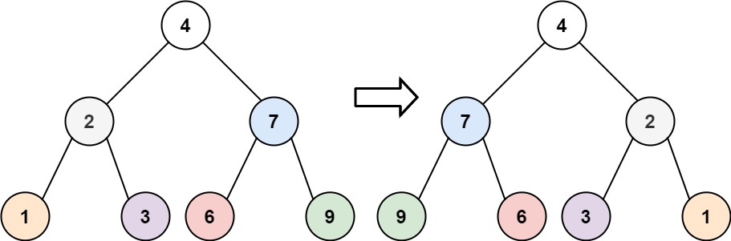
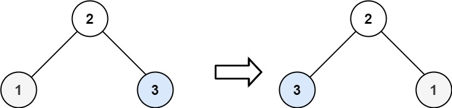

226. 翻转二叉树
本题学习状态正在读取学习记录…下次复习：—
按 M 快速切换薄弱标记题目与约束
给你一棵二叉树的根节点 root ，翻转这棵二叉树，并返回其根节点。
示例 1：

输入：root = [4,2,7,1,3,6,9]
输出：[4,7,2,9,6,3,1]
示例 2：

输入：root = [2,1,3]
输出：[2,3,1]
示例 3：
输入：root = []
输出：[]
提示：
- 树中节点数目范围在
[0, 100]内 -100 <= Node.val <= 100
核心不变量
每个节点只做一件事：交换左右孩子。
完整推导
思路推导
这道题最适合训练“递归函数只负责当前节点”的思维：
- 空节点无需处理，直接返回。
- 当前节点交换
left与right。 - 对交换后的左右子树继续做同样的事情。
先交换再递归、先递归再交换都能得到正确结果；关键是整棵树的每个节点都恰好被处理一次。
Java 实现
class Solution {
public TreeNode invertTree(TreeNode root) {
if (root == null) {
return null;
}
TreeNode temp = root.left;
root.left = root.right;
root.right = temp;
invertTree(root.left);
invertTree(root.right);
return root;
}
}
C++ 实现
实现来源：代码随想录（programmercarl.com）
swap(root->left, root->right);
invertTree(root->left);
invertTree(root->right);
Python 实现
实现来源：代码随想录（programmercarl.com）
# Definition for a binary tree node.
# class TreeNode:
# def __init__(self, val=0, left=None, right=None):
# self.val = val
# self.left = left
# self.right = right
class Solution:
def invertTree(self, root: TreeNode) -> TreeNode:
if not root:
return None
root.left, root.right = root.right, root.left
self.invertTree(root.left)
self.invertTree(root.right)
return root
Go 实现
实现来源：代码随想录（programmercarl.com）
func invertTree(root *TreeNode) *TreeNode {
if root == nil {
return nil
}
root.Left, root.Right = root.Right, root.Left //交换
C 实现
实现来源：代码随想录（programmercarl.com）
struct TreeNode* invertTree(struct TreeNode* root){
if(!root)
return NULL;
//交换结点的左右孩子（中）
struct TreeNode* temp = root->right;
root->right = root->left;
root->left = temp;
左
invertTree(root->left);
//右
invertTree(root->right);
return root;
}
复杂度
- 时间复杂度：
O(n)，每个节点访问一次。 - 空间复杂度：
O(h)，递归栈深度等于树高；退化链表时最坏为O(n)。
易错点与扩展
- 交换的是节点引用，而不是节点值。
- 不要只交换根节点；左右子树也必须递归处理。
- 迭代写法可使用队列做 BFS：节点出队后交换孩子，再把非空孩子入队。